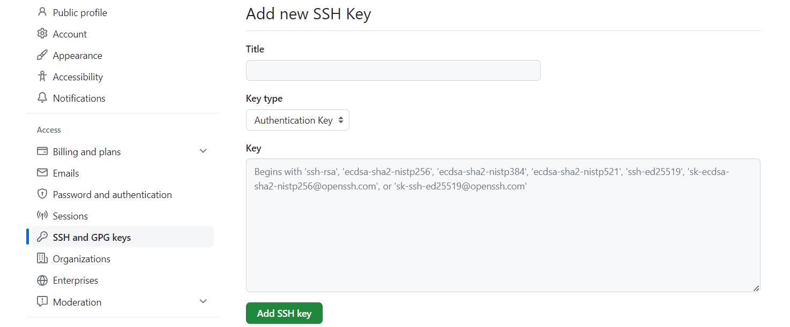
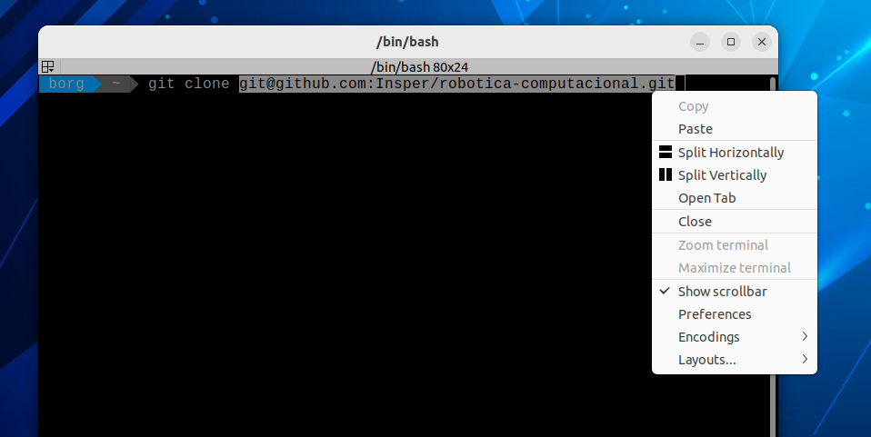
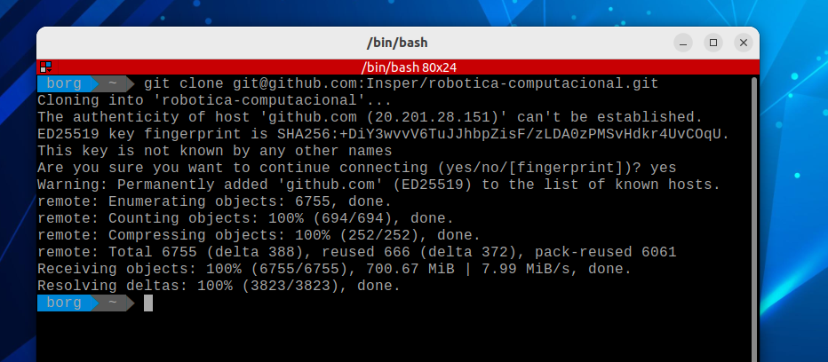
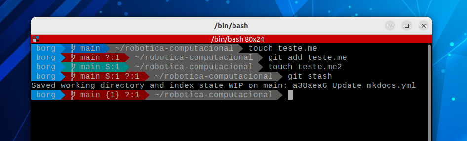

Configure o seu Git
Boas noticias, não precisa instalar o Git, deixamos isso pronto pra você, porém, algumas configurações só você pode fazer, te mostramos neste guia algumas noções básica sobre Git, GitHub e quais são os passos para fazer as configurações necessárias, bom proveito!
O que é o Git?
O Git é um sistema de controle de versão distribuído. Um sistemas de controle de versão tem a função de registrar qualquer alteração feita em cima de um código, armazenando essas informações e permitindo voltar a versões anteriores de uma aplicação de modo simples e rápido. Este tipo de sistema também simplifica muito o processo de compartilhamento de um projeto com um time.
Um repositório ou um projeto Git, engloba toda a coleção de arquivos e pastas associados a um projeto, junto com o histórico de revisão de cada arquivo. O histórico de arquivos aparece como instantâneos no tempo denominados commits. Os commits podem ser organizados em várias linhas de desenvolvimento denominadas branches. Os repositórios são unidades auto-confinadas e qualquer pessoa que tiver uma cópia do repositório pode acessar toda a base de código e seu histórico. Um repositório Git também permite a interação com o histórico, clonagem do repositório, criação de branches, commiting, merge, comparação de alterações entre versões de código e muito mais.
Por meio de plataformas como GitHub, o Git também oferece mais oportunidades para transparência e colaboração do projeto. Repositórios públicos ajudam as equipes a trabalhar juntas para criar o melhor produto final possível.
Dica 1
Para saber mais, consulte a documentação
O que é GitHub?
GitHub é uma plataforma de hospedagem de código para controle de versão e colaboração usando as ferramentas Git, possibilita que desenvolvedores trabalhem em um único projeto podendo acessar as contribuições da equipe em tempo real, o GitHub também possui recursos de organização e gestão de projetos.
GitHub cria colaboração diretamente no processo de desenvolvimento. O trabalho é organizado em repositórios onde os desenvolvedores podem definir os requisitos e expectativas para os integrantes da equipe. Em seguida, ao usar o fluxo GitHub, os desenvolvedores simplesmente criam um branch para trabalhar nas atualizações, enviar alterações para salvá-las, abrir um pull request para propor alterações e fazer merge de pull requests quando todos estiverem de acordo. Para obter mais informações, confira Fluxo do GitHub.
Resumindo as diferenças entre Git e GitHub:
Git
É um software que é instalado na máquina do usuário e é executado localmente, possui um conjunto de ferramentas que monitora o histórico de alteraçoes onde qualquer versão anterior do projeto pode ser recuperada a qualquer momento, isso é Git:
- git init
- git clone
- git status
- git add meu_arquivo.py
- git add minha_pasta_completona
- git commit -m "minha mensagem de commit"
- git push origin nome_da_branch
- git checkout -b nome_da_nova_branch
Resumo de comandos git via terminal
GitHub
É uma plataforma que hospeda códigos e possibilita a colaboração com repositórios públicos, é o chamado repositório remoto. Isso é GitHub:
- Abrir um pull request
- Criar um Fork de um repositório remoto
- Criar um repositório público
- Criar um repositório privado
- Criar um clone de um repositório remoto
- Criar plugins de automação com actions
- Criar Issues no repositório remoto
- Criar organizações com gerenciamento de permissões entre integrantes
Se quiser saber mais, visite o canal do YouTube oficial do GitHub ou a documentação oficial.
Se identificando para o Git
A primeira coisa que devemos fazer antes de começar a usar o Git é configurar o nome de usuário e endereço de e-mail. Isto é importante porque cada commit usa esta informação, e ela é carimbada de forma imutável nos seus commits:
Abra um terminal usando o atalho Super + T, então use os comando a seguir para configurar o seu user name e seu email:
git config --global user.name "Seu Belo Nome Aqui"
git config --global user.email Seu_email_do_GitHub_aqui@exemplo.br
Dica 2
Não precisa colocar o seu login do GitHub ao configurar o user.name, pode ser o seu nome sem problemas
Você precisara fazer a configuração de usuário e email somente uma vez, por que estamos usado a opção --global, o Git usará esta configuração para qualquer coisa que você fizer no Git em qualquer parte do sistema.
Se você precisar substituir os dados de usuário e email para um projeto específico, você pode executar o mesmo comando sem a opção --global dentro do projeto específico, então a configuração será local e só vai funcionar naquele espaço.
Seu Editor
Agora que a sua identidade está configurada, você pode escolher o editor de texto padrão que será chamado quando o Git precisar que você digite uma mensagem. Se não for configurado, o Git usará o editor padrão, que normalmente é o nano. Se você quiser usar um editor de texto diferente, como o Visual Code, você pode fazer o seguinte:
git config --global core.editor code
Configurando autenticação por chave ssh
Autenticação por chave SSH é um método de garantir uma conexão segura entre dois sistemas. Uma chanve SSH na verdade consiste de um par de chaves, uma chave privada, que é mantida em segredo no computador do usuário, e uma chave pública, que é colocada no servidor. Quando você tenta conectar-se ao um servidor, no caso tenta se conectar na sua conta do Git, ele criará um desafio criptográfico usando sua chave pública, que só pode ser resolvido com a chave privada correspondente. Assim, o Git pode confirmar sua identidade automaticamente, sem que você precise enviar uma senha ou seu personal access token.
Vamos agora aprnder como confirguardar a sua chave SSH no GitHub.
Gerando uma chave SSH
Primeiramente devemos criar uma chave SSH, para isso, abra um terminal e execute o seguinte comando substituindo o endereço de e-mail pelo seu GitHub. Pressione enter para aceitar o local padrão para salvar a chave, ao menos que você deseje salvar com outro nome.
ssh-keygen -t ed25519 -C "your_email@example.com"
Você receberá uma mensagem parecida com a imagem a seguir, se desejar adicionar uma senha para a chave, digite uma senha e pressione enter, se não quiser adicionar uma senha, pressione enter sem digitar nada. Se adicionar uma senha, você precisará digitar a senha toda vez que usar a chave.

Por fim, você receberá uma mensagem parecida com a imagem a seguir, isso significa que a chave foi criada com sucesso.

Agora vamos adicionar a chave ao ssh-agent, o ssh-agent é um programa que roda em segundo plano e armazena as chaves privadas usadas para autenticação SSH, ele é responsável por segurar as chaves privadas e usar quando necessário.
eval "$(ssh-agent -s)"
ssh-add ~/.ssh/id_ed25519
Você receberá uma mensagem parecida com a imagem a seguir.

Adicionando a chave SSH ao GitHub
Agora vamos adicionar a chave SSH que criamos ao GitHub, para isso, vamos copiar o conteudo do arquivo id_ed25519.pub e cola-lo na sua página de configurações do GitHub. Voce pode fazer isso abrindo o arquivo com o seu editor de texto favorito e copiar o conteudo, ou pode usar visualizar o conteúdo do arquivo no terminal com o cmando abaixo:
cat ~/.ssh/id_ed25519.pub
Após esse último comando, o conteúdo da sua chave SSH será exibido no terminal, você só precisa marcar com o mouse o texto todo e clicar como botão direito do mouse sobre a marcação pra copiar:

Agora basta colar na sua página de configurações do GitHub. Para acessar a página de configurações, clique na sua foto de perfil no canto superior direito da página do GitHub, em seguida, clique em Settings.

Depois, na barra lateral esquerda, clique em SSH and GPG keys. Em seguida, clique em New SSH key ou Add SSH key.


Preencha o campo Title com um nome descritivo para a chave, por exemplo, SSD Robotica. Em seguida, cole a chave no campo Key. Finalmente, clique em Add SSH key.
Agora não será mais nescessario digitar seu usuário e senha toda vez que você executar um comando git, o GitHub vai reconhecer a sua chave SSH e vai autenticar você automaticamente.
Clonando repositorios com a chave SSH
Agora que a chave SSH já está configurada, vamos usar para clonar um repositório usando a chave.
Para este primeiro uso, vamos clonar o repositório de robótica. Você o acessará através de uma página no github, mas é um reposítório possível de ser clonado.
O endereço do repositório é: https://github.com/insper-classroom/robcomp_util
Ao acessar a página, verá um botão escrito <> Code, clicando nele verá três opoções: HHTPS, SSH e GitHubCLI. Você deve clicar em SSH. Ao lado do endereço que aparecerá, tem um íconde cópia, clique nele.
Abra um terminal e vá até o diretório que será feito o clone do repositório. Lá digite o comando git clone adicionado pelo endereço de clonagem:
git clone git@github.com:insper-classroom/robcomp_util.git
Dica 3
Você pode colar no terminal usando o botão direito do mouse e selecionar parte ou utilizando as teclas CTRL+SHIFT+V. Pode colar também com o botão do meio do mouse.

Quando usar a chave SSH pela primeira vez, terá de confirmar a dição dela ao uso no terminal. basta digitar yes e apertar enter.
Imediatamente antes do início da clonagem você verá a adição do github.com à lista de hosts conhecidos. Agora, é só aguardar o termino.

Salvando trabalho local
Às vezes, temos trabalhos locais que não queremos perder, mas precisamos atualizar o repositório devido a alterações feitas por outro desenvolvedor.
Para essa situação, podemos usar o comando git stash. Ele move todo o trabalho local para um cache oculto e mantém o repositório inalterado para que você possa fazer a atualização.
Para demonstrar como isso funciona, você seguirá uma série de prompts. No entanto, você não deve tentar alterar este repositório que acabou de clonar.
Como este repositório não permite que você envie alterações, mas é necessário atualizar com as modificações feitas pelo professor, você precisa "guardar" suas alterações para não perder seu progresso. Vamos usar o comando git stash para armazenar suas alterações em um cache oculto do git:

É possível verificar uma mensagem indicando que seu trabalho local foi salvo, juntamente com um índice dessa situação. Ao lado da branch, você verá um número entre chaves, indicando que há trabalho local guardado em cache.
Se listarmos o diretório, veremos que os arquivos alterados não estão presentes no repositório local:
Para retornar o trabalho, basta usar o comando git stash pop. Aparecerá um aviso com os arquivos restaurados e, ao listar o diretório, os arquivos estarão de volta.
Atualizando o repositório
Para atualizar um repositório com os conteúdos do repositório online, você precisará usar o comando pull. Basta entrar no diretório do repositório e digitar git pull.

Você verá mensagens indicando quantos e quais arquivos foram alterados.
Atualizando o repositório remoto (enviando as alterações)
Após realizar suas alterações no repositório, é necessário enviar estas alterações para o respositório remoto.
A sequência de comandos necessária para isso é:
-
Adicionar os arquivos alterados
-
Realizar o commit com uma mensagem clara e informativa
-
Enviar as alterações para o repositório remoto.
Para adicionar os arquivos, você pode adicionar um a um ou todos de uma vez. Vamos ver as duas situações.
Dica 4
Se você clonou o repositório utilizando SSH, não precisará usar credenciais. Porém, se tiver clonado utilizando HTTPS, será necessário fornecer seu usuário do GitHub e seu token de acesso (não é a senha!).
Adicionando um arquivo em específico:
Adicionando todos os arquivos: